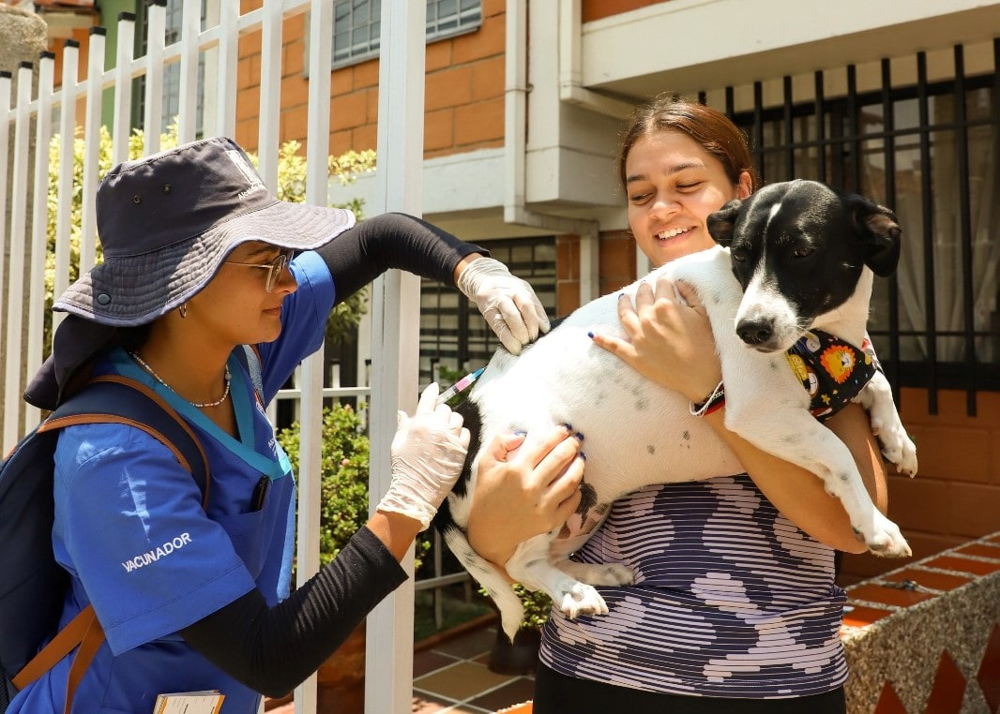

Vacunación periodica
Jornada de vacunación en el Floridablanca
Adopción Resposable
Jornada de adopción en Bucaramanga
Esterilización oportuna
Jornada de esterilización en Zapatoca
Nuestra Fundación
Esta imagen resume nuestra esencia
Rescate de hogares no seguros
Jornada de rescate en el Barrio La Cumbre de Floridablanca
Historias Felices
Familias que encontraron a su nuevo mejor amigo
Vanessa Galvis
“Adoptar a Betty cambió nuestra vida. Ahora nuestra casa está llena de alegría y amor.”
Sergio Pinto
“Gracias a Patitas Felices encontramos a Titan. El proceso fue increíble y muy humano.”
David Dominguez
“Ahora Luna tiene un hogar lleno de cariño. Estamos felices de haberla adoptado.”